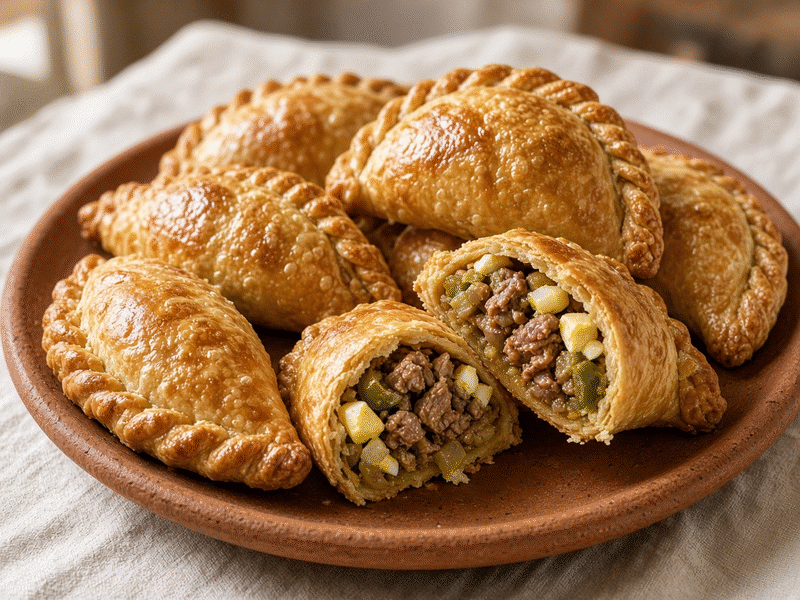
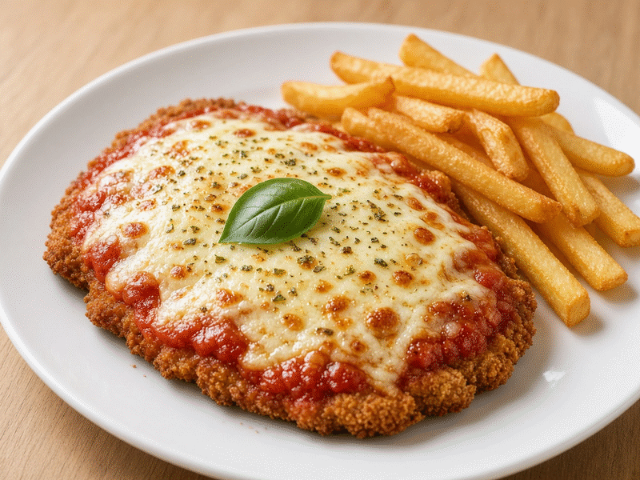
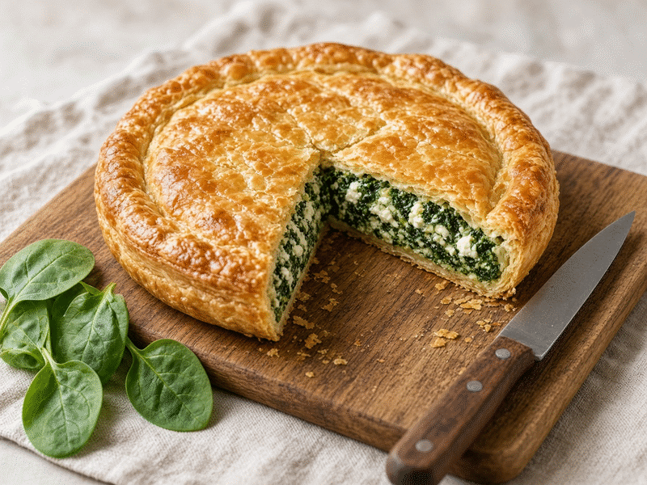
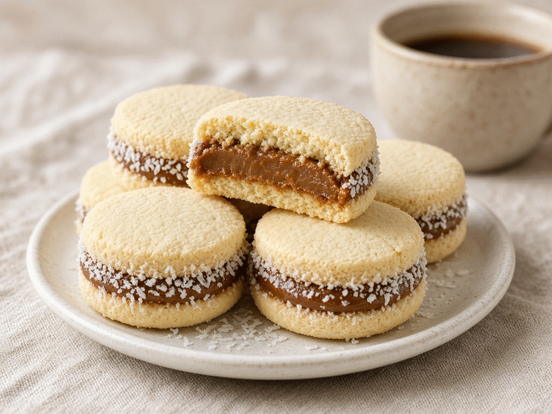
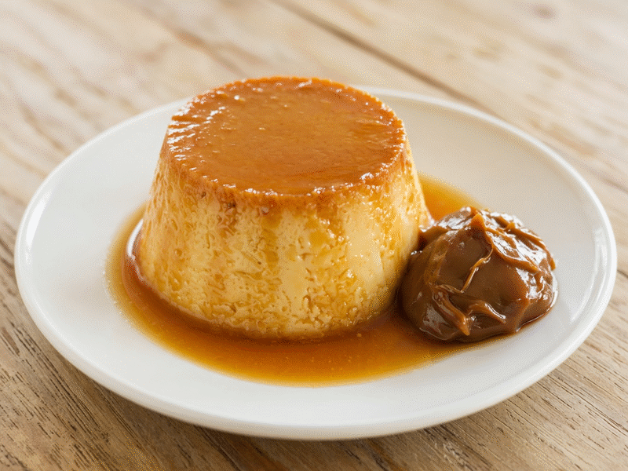

Empanadas de carne cortada a cuchillo
Relleno jugoso de carne, cebolla y huevo, con masa criolla horneada.
- Porciones: 12 unidades
- Tiempo: 90 minutos
Un recetario de cocina dividido en dos categorías: saladas y dulces. Elegí una categoría y descargá el recetario completo en PDF.
Seleccioná una categoría para ver las recetas correspondientes en esta misma zona de la página.

Relleno jugoso de carne, cebolla y huevo, con masa criolla horneada.

Milanesa crocante con salsa de tomate, jamón y muzzarella gratinada.

Masa casera con relleno cremoso de espinaca, ricota y nuez moscada.

Tapas suaves que se deshacen, unidas con dulce de leche y coco.

Flan de huevo cocido a baño María, con caramelo rubio y dulce de leche.
Budín húmedo de limón y yogur, terminado con glaseado de azúcar impalpable.